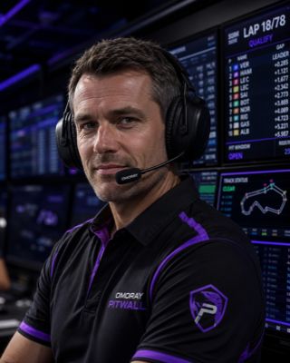
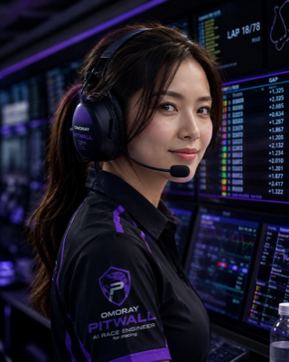
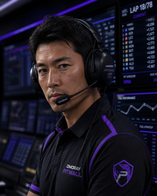
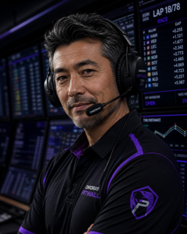
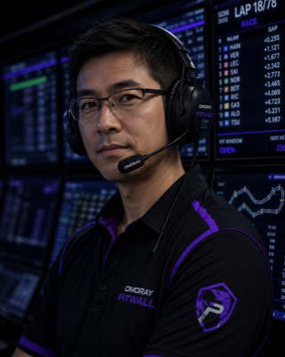
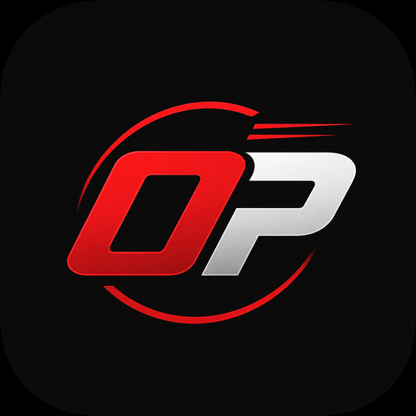

Your AI engineer in your ear — lap times, traffic alerts, pit strategy, and debrief. All session long.
Five engineers. Different styles, same mission — get you across the line.





First 50 drivers lock in the Founding rate — forever.

OMORAY PITWALL